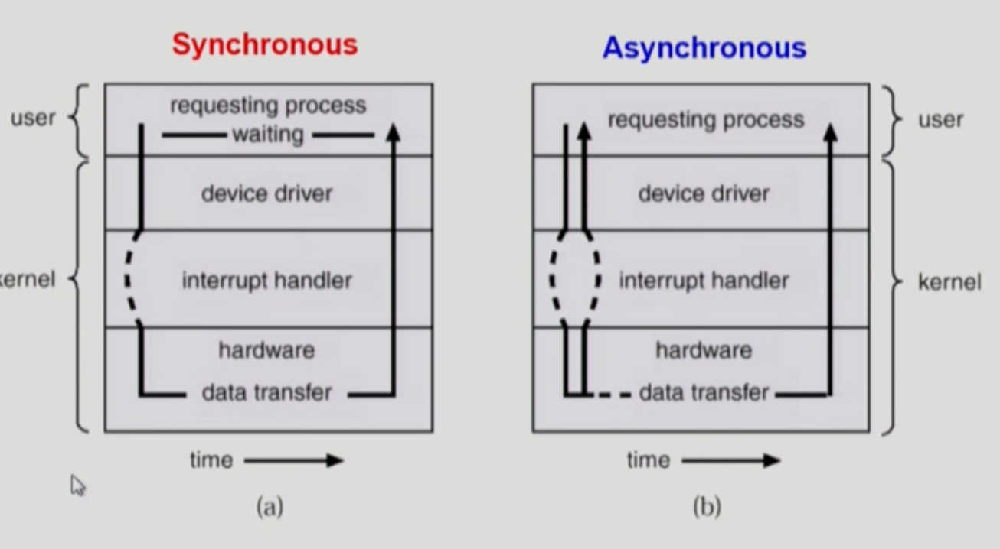
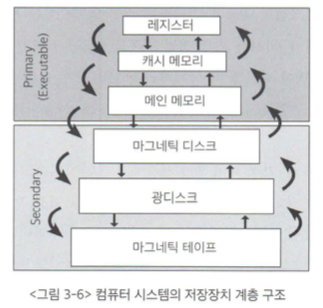

목차
- 목차
- 컴퓨터 시스템의 구조
- CPU 연산과 I/O 연산
- 인터럽트의 일반적 기능
- 인터럽트 핸들링
- 입출력 구조
- DMA
- 저장장치의 구조
- 저장장치의 계층 구조
- 하드웨어의 보안
- 메모리 보안
- CPU 보호
컴퓨터 시스템의 구조
컴퓨터 시스템의 구조
- 컴퓨터 내부장치 : CPU, 메모리
- 컴퓨터 외부장치(입출력 장치) : 디스크, 키보드, 마우스, 모니터, 네트워크 장치
입력과 출력
입력(input) : 컴퓨터 내부로 데이터가 들어오는 것
출력(output) : 컴퓨터 외부장치로 데이터가 나가는 것
[입출력 예시]
디스크에서 내용을 읽어(입력) 컴퓨터 내부에서 어떤 연산을 수행한 후 디스크에 데이터를 저장(출력)
컨트롤러
입출력 장치에는 컨트롤러라 불리는 작은 CPU가 붙어있음
컨트롤러는 개별 입출력 장치를 제어하는 CPU (메모리도 하나의 장치이기 때문에 메모리 컨트롤러가 존재)
커널의 의미
어떤 프로그램이 수행되려면 그 프로그램이 메모리에 올라가 있어야 함
운영체제는 컴퓨터가 부팅되었을 때부터 항상 수행되며 자원을 관리해야하므로 항시 메모리에 있음 (이 문단의 운영체제는 넓은 의미의 운영체제를 지칭함)
하지만 운영체제의 모든 코드를 메모리에 상주시키면 메모리 낭비가 발생하게 됨 (당장 사용중이지 않은 코드들도 있으므로)
이러한 메모리 낭비를 방지하기 위해 운영체제 중 커널(kernel)만 항시 메모리에 상주함
CPU 연산과 I/O 연산
입출력 연산과 메인 CPU 연산의 동시 작업
I/O 연산은 입출력 컨트롤러가 담당하고 컴퓨터 내부에서 수행되는 연산은 메인 CPU가 담당함
따라서 이 두 작업이 “동시”에 이루어지는 것이 가능함
로컬버퍼(local buffer)와 인터럽트(interrupt)
디스크나 키보드에서 데이터를 읽어올 때 우선 로컬 버퍼에 데이터가 임시로 저장된 후 메모리에 전달됨
장치에서 로컬버퍼로 읽어오는 일은 각 장치마다 달려있는 컨트롤러가 담당함
[예시]
메인 CPU에서 디스크에서 어떤 데이터를 읽어오라는 명령 지시 (CPU는 이를 지시하고 다른 일 하러 감)
디스크 컨트롤러는 디스크로부터 내용을 읽어 로컬버퍼에 이를 저장
로컬버퍼에 읽어야하는 데이터를 모두 저장했다면 컨트롤러가 인터럽트를 발생시켜 CPU에 보고함
CPU의 인터럽트 처리 방식
CPU는 매 instruction set을 읽은 뒤마다 인터럽트 라인을 확인하게 되는데 이때 인터럽트 발생이 확인되었다면 다음 instruction set을 읽기 전에 인터럽트 처리를 진행함
인터럽트의 일반적 기능
인터럽트 처리루틴
어떤 인터럽트가 들어왔을 때 운영체제가 무슨 일을 해야할지가 커널에 저장되어있다.
다양한 인터럽트에 대해 각각 처리해야 할 일이 정해져서 커널에 보관되어있다.
하드웨어 인터럽트와 소프트웨어 인터럽트의 차이
하드웨어 인터럽트와 소프트웨어 인터럽트는 인터럽트 라인에 신호를 보내어 인터럽트를 처리한다는 공통점을 가지고 있지만
하드웨어 인터럽트와 다르게 소프트웨어 인터럽트의 경우에는 직접 CPU의 인터럽트 라인을 세팅하지 않는다.
인터럽트 벡터
운영체제는 인터럽트 벡터라는 것을 가지고 있다.
C언어의 포인터에 비유하자면 인터럽트를 처리하는 코드들(인터럽트 처리 루틴 or 인터럽트 핸들러)은 “실제 변수의 값”에 해당하고
“코드”들의 주소(포인터)를 저장해서 모아놓은 곳이 바로 인터럽트 벡터이다. (도서관의 책 정보 DB같은 느낌)
인터럽트 처리 루틴을 통해 해당하는 인터럽트 처리를 완료하면 인터럽트 발생 이전 위치로 돌아가 작업을 재개해야 하는데
이를 위해 수행중이던 작업의 위치를 저장하는 공간을 별도로 가지고 있다. (PCB)
소프트웨어 인터럽트(트랩)의 두 종류, 예외상황과 시스템 콜
예외상황은 사용자 프로그램이 비정상적인 작업을 시도하거나 자신의 메모리 영역 바깥으로의 접근 등 접근권한이 없는 작업을 시도할 때 발생한다.
시스템 콜은 운영체제 내부에 정의된 코드를 실행하고 싶을 때 운영체제에 서비스를 요청하는 방법이다. (대표적으로 exit함수의 호출이 있다.)
사용자 프로그램은 직접 CPU를 가지고 실행하지만 직접 인터럽트를 발생시킬 수 없기 때문에 운영체제에게 CPU 제어권을 넘겨 I/O 작업 등을 실행한다.
직접 인터럽트를 발생시키는 것은 아니지만 프로그램 코드가 직접 인터럽트 라인을 세팅하는 명령을 실행하여 인터럽트를 발생시키는 것이므로 넓은 의미의 인터럽트 범주에 포함시킨다.
인터럽트 핸들링
프로그램 제어블록(Process Control Block: PCB)
함수의 깊이 깊어져서 레지스터 윈도우가 가득 차면 가장 처음 사용된 레지스터 윈도우의 정보들을 메모리에 임시보관한다.
비슷한 맥락의 일이 인터럽트 과정에서도 일어나는데 인터럽트를 처리하기 위해 이동하기 전 레지스터의 값들을 프로그램 제어블록(PCB)에 보관하게 된다.
PCB는 프로그램마다 하나씩 존재하며 해당 프로그램의 어느 부분이 실행중이었는지를 저장한다.
입출력 구조
동기식 입출력(synchronous I/O)의 단점
동기식 입출력은 동기식으로 입출력 과정을 진행하는 것을 말한다.
동기식이란 어떤 작업이 완전히 끝난 후에야 다음 작업을 진행하는 것을 말한다.
하지만 CPU의 명령 수행 속도에 비해 I/O 장치로부터 데이터를 읽어오는 등의 입출력 연산은 느리다.
따라서 동기식 입출력 방식을 사용하면 CPU 자원을 낭비하게 된다.
프로그램의 봉쇄 상태(blocked state)
위와 같은 CPU 자원의 낭비를 막기 위해 운영체제는 프로그램의 상태를 몇가지로 나누어 관리한다.
그 중 하나가 봉쇄 상태이고 봉쇄 상태의 프로그램은 CPU를 할당받지 못한다.
실행 중이던 프로그램이 봉쇄 상태에 들어가면 CPU를 다른 프로그램에게 할당한다.
입출력의 동기화 방법 (큐의 활용)
프로그램 A가 I/O 장치인 디스크의 데이터를 변경하는 입출력 연산 지시하여 봉쇄 상태에 들어갔고
이후 CPU를 프로그램 B에게 할당했더니 B 또한 디스크의 데이터를 변경하는 입출력 연산을 내렸다고 가정하자
이 과정에서 프로그램 A와 B가 디스크의 같은 위치의 내용을 변경하라는 명령을 내렸다면 작업이 각각의 프로그램의 의도와 맞지 않게 동작할 수 있다.
A로 인해 변경된 내용이 반영되지 않은 시점에서 B가 명령을 지시하기 때문이다.
이를 방지하기 위해 장치별로 큐(queue)를 두어 요청한 순서대로 일을 처리할 수 있게(동기성을 보장하도록) 한다.
(더 자세한 이해를 위해선 교재 77pg의 <그림 3-2>를 참고)
비동기식 입출력(asynchronous I/O)
비동기식 입출력은 입출력 연산 요청 후 작업 종료를 기다리지 않고(프로그램을 봉쇄 상태에 접어들게 하지 않고) CPU 제어권을 입출력 연산을 호출한 프로그램에게 곧바로 부여하는 방식을 말한다.
꼭 I/O 작업이 완료되어야 다음 작업을 진행할 수 있지는 않다.
가령 디스크에 쓰기 작업을 지시했다면 쓰기 작업이 진행되는 동안 프로그램이 봉쇄 상태로 있어야 할 이유가 없다.
이런 상황에서 비동기식 작업을 통해 프로그램의 성능을 높일 수 있다.
(더 자세한 사례를 통한 이해를 위해선 교재 79pg ~ 80pg를 참고)
[동기식 입출력과 비동기식 입출력의 이해를 돕기 위한 그림]

DMA
지나친 인터럽트가 야기하는 문제점
원칙적으로 메모리는 CPU에 의해서만 접근할 수 있다.
따라서 외부 장치가 메모리에 접근하려면 인터럽트를 발생시켜 CPU로 하여금 작업을 대행하도록 하여야 한다.
하지만 이러한 방식은 CPU의 업무를 방해하여 효율성이 떨어지는 문제를 일으킨다.
DMA를 통한 문제의 해결
위와 같은 효율성 저하의 문제를 해결하기 위해 DMA(Direct Memory Access)라는 장치가 존재한다.
DMA는 일종의 컨트롤러로서 CPU가 입출력 장치들에 의해 지나치게 인터럽트 당하는 것을 막아준다.
CPU가 대행하던 메모리 접근 업무를 DMA가 대신 진행하는 것이다.
이때 DMA는 바이트 단위가 아니라 블록이라는 큰 단위로 정보를 메모리로 읽어온 후 CPU에 인터럽트를 발생시켜 해당 작업의 완료를 알려준다.
저장장치의 구조
주기억장치와 보조기억장치
주기억장치는 보통 메모리라고 불리는 휘발성(전원 종료시 내용이 사라짐) RAM을 매체로 사용하는 경우가 대부분이다.
보조기억장치는 주기억장치와 반대로 비휘발성의 마그네틱 디스크를 주로 사용한다.
이 외에도 플래시 메모리, CD, 마그네틱 테이프 등이 사용되기도 한다.
보조기억장치의 용도
보조기억장치의 용도는 크게 두 가지로 구분된다.
첫 번째는 파일 시스템(file system) 용도이다.
전원이 나가도 유지되어야 하는 정보를 비휘발성인 보조기억장치의 특성을 이용해 보관한다.
두 번째는 메모리의 연장 공간인 스왑 영역(swap area) 용도이다.
메모리는 크기가 한정적이고 가격이 비싸고 용량이 적기 때문에 메모리 공간 부족의 문제가 빈번히 발생한다.
따라서 당장 필요한 부분만 메모리에 올려놓고 그렇지 않은 부분은 디스크의 스왑 영역에 내려놓게 되며 이를 스왑 아웃(swap out) 이라한다.
스왑 아웃된 부분이 다시 필요해지면 메모리 영역에 올려서 사용할 수 있다.
하드디스크의 물리적 구조
대표적인 보조기억장치인 하드디스크는 여러개의 원판을 암(arm)이 이동하며 저장된 데이터를 읽거나 새로운 데이터를 쓰는 방식으로 동작한다.
디스크 원판의 표면은 트랙(track)으로 나뉘고, 각 트랙은 다시 섹터(sector)로 나뉜다.
섹터에 최소한의 단위 정보다 저장된다. (가장 보편적으로 1바이트가 저장될 것이다.)
저장장치의 계층 구조
저장장치의 계층 구조
저장장치는 빠른 저장장치부터 느린 저장장치까지 단계적인 계층 구조로 이루어진다.
빠른 저장장치로 갈수록 접근 속도가 빠른 대신, 단위 공간 당 가격이 비싸기 때문에 적은 용량을 사용한다.
이를 보완하기 위해 당장 필요한 정보만을 선별적으로 저장하여 이용한다.

캐싱 기법
빠르고 용량이 적은 저장장치를 이용해 느리고 용량이 큰 저장장치의 성능을 향상시키는 총체적 기법을 캐싱 기법이라 한다.
느린 저장장치의 내용 중 당장 사용되거나 빈번히 사용될 정보를 빠른 저장장치에 선별적으로 저장함으로써 두 저장장치 사이의 속도를 완충시킨다.
하드웨어의 보안
하드웨어 보안 기법의 필요성
운영체제는 보통 다중 프로그래밍 환경에서 동작한다.
각각의 프로그램이 충돌 없이 실행되려면 이를 방지하기 위한 보안 기법이 필요하다.
어떤 프로그램이 다른 프로그램의 메모리 영역이나 파일 영역을 침범하는 작업을 실행하려 한다면 이를 막아야 한다.
모드비트(Mode bit)
사용자 프로그램이 CPU를 가지고 있는 동안 운영체제는 자신의 코드를 실행하지 못한다.
따라서 사용자 프로그램이 위험한 연산을 실행하려 하면 이를 막을 하드웨어적 장치가 필요하다.
이를 위해 CPU 내부에 모드비트를 두어 사용자 프로그램을 감시한다.
모드비트가 0으로 세팅되어 있으면 커널모드, 1로 세팅되어 있으면 사용자 모드이다.
CPU는 보안과 관련된 위험한 연산 혹은 접근을 시도하기 전에 항상 모드비트를 조사하여 그 값이 0인 경우에만 해당 명령을 수행한다.
해당 명령이 끝났다면 모드비트를 다시 1로 세팅하여 사용자 프로그램에게 CPU를 할당한다.
특권명령
위와 같은 절차를 통해 보안 관련 접근이 이루어지기 때문에 사용자 프로그램은 시스템 콜을 통해 보안이 필요한 중요한 명령을 수행할 수 있다.
시스템의 보안과 관련된 명령들을 특권명령이라 지칭하며 이러한 특권명령은 모드비트가 0일때만 커널모드에서 운영체제에 의해서만 수행된다.
하드웨어 장치에서의 보안 유지 방식
사용자 프로그램이 직접 하드웨어 장치에 접근할 수 있다면 보안상의 문제가 발생할 수 있다.
이를 방지하기 위해 모든 입출력 명령은 특권명령으로 규정된다.
메모리 보안
메모리 침범 문제
여러 프로그램이 동시에 메모리에 올라가서 실행되기 때문에 어떤 프로그램이 다른 프로그램의 메모리 영역을 침범하거나 운영체제 커널이 위치한 영역을 참조하려는 시도가 일어날 수 있다.
기준 레지스터와 한계 레지스터
이를 방지하기 위해 기준 레지스터와 한계 레지스터를 사용하여 접근하려는 메모리 영역이 합법적인지를 체크할 수 있다.
프로그램은 기준 레지스터와 합법레지스터 범위 내의 메모리에만 접근할 수 있으며 이를 어길 시 예외상황(exception)을 발생시킨다.
예외상황이 발생하면 CPU의 제어권이 운영체제로 이양되고 운영체제는 예외상황을 일으킨 프로그램을 강제로 종료한다.
기준 레지스터와 한계 레지스터 값을 세팅하는 연산은 특권명령에 해당하기 때문에 사용자 프로그램이 임의로 변경할 수 없다.
단, 지금까지 살펴본 메모리 보안 기법은 연속적인 메모리의 관리 기법이며 추후에 페이징(paging) 기법 등에 대해서도 살펴볼 것이다.
CPU 보호
타이머(Timer)
특정 프로그램이 CPU를 독점하는 일을 방지하기 위해 타이머(timer)라는 하드웨어 장치를 둔다.
타이머는 정해진 시간이 지나면 프로그램으로부터 CPU 점유를 박탈하여 다른 프로그램에게 CPU를 이양한다.
타이머의 값은 일정한 시간 단위로 세팅될 수 있으며 이를 세팅하는 명령인 로드 타이머(load timer)은 특권명령에 해당한다.
타이머는 시분할 시스템에서 현재 시간을 계산하기 위해서도 사용된다.